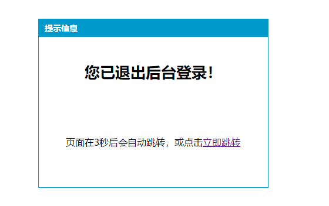

在PHP开发中，尤其是MVC框架或者项目中，会碰到很多跳转情况，比如：登录成功或失败后的跳转等等。
以下以MVC框架开发中为基础，示例讲解：
在基础控制器类中：Conrtoller.class.php
1 <?php
2
3 /**
4 * 基础控制器类
5 */
6 class Controller {
7 /**
8 * 跳转
9 * $url 目标url
10 * $info 提示信息
11 * $time 等待时间（单位秒）
12 */
13 protected function jump($url,$info=NULL,$time=3) {
14 //判断是立即跳转还是刷新跳转
15 if(is_null($info)) {
16 //立即跳转
17 header('location:'. $url);
18 die;
19 } else {
20 //刷新跳转,给出提示
21 echo <<<TIAOZHUAN
22 <meta http-equiv="Content-Type" content="text/html; charset=utf-8" />
23 <title>提示信息</title>
24 <style type='text/css'>
25 * {margin:0; padding:0;}
26 div {width:390px; height:287px; border:1px #09C solid; position:absolute; left:50%; margin-left:-195px; top:10%;}
27 div h2 {width:100%; height:30px; line-height:30px; background-color:#09C; font-size:14px; color:#FFF; text-indent:10px;}
28 div p {height:120px; line-height:120px; text-align:center;}
29 div p strong {font-size:26px;}
30 </style>
31 <div>
32 <h2>提示信息</h2>
33 <p>
34 <strong>$info</strong><br />
35 页面在<span id="second">$time</span>秒后会自动跳转，或点击<a id="tiao" href="$url">立即跳转</a>
36 </p>
37 </div>
38 <script type="text/javascript">
39 var url = document.getElementById('tiao').href;
40 function daoshu(){
41 var scd = document.getElementById('second');
42 var time = --scd.innerHTML;
43 if(time<=0){
44 window.location.href = url;
45 clearInterval(mytime);
46 }
47 }
48 var mytime = setInterval("daoshu()",1000);
49 </script>
50 TIAOZHUAN;
51 die;
52 }
53 }
54
55 }在MVC的自动加载中，将Controller.class.php进行自动加载注册
通过不同控制器类继承上面的Controller.class.php基础控制器类后，就可以调用定义的跳转提示。
1 <?php
2
3 /**
4 * 后台管理员控制器(登录、注销、管理员的增删改查等)
5 */
6 class AdminController extends Controller {
7 /**
8 * 展示登录表单动作
9 */
10 public function loginAction() {
11 // 载入当前的视图文件
12 $this->display('login.html');
13 }
14 /**
15 * 后台注销功能
16 */
17 public function logoutAction() {
18 @session_start();
19 // 删除相关会话数据
20 unset($_SESSION['adminInfo']);
21 // 删除会话数据区
22 session_destroy();
23 // 立即跳转到登录页面
24 $this->jump('index.php?c=Admin&a=login','您已退出后台登录！');
25 }
26 }当然，这里是在MVC中实现的，你也可以把jump()单独提出来进行使用。
附上一个效果图：
